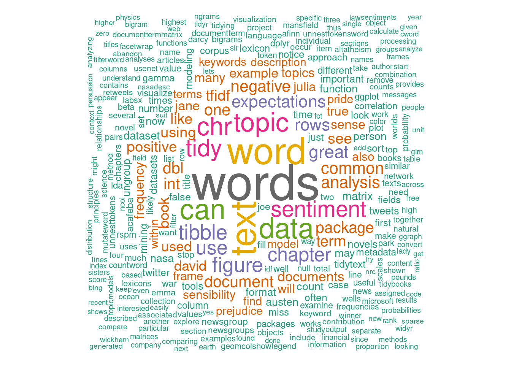
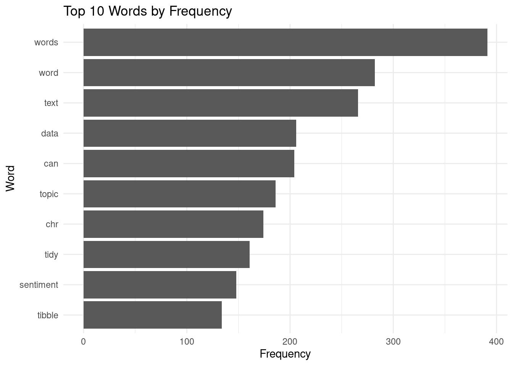
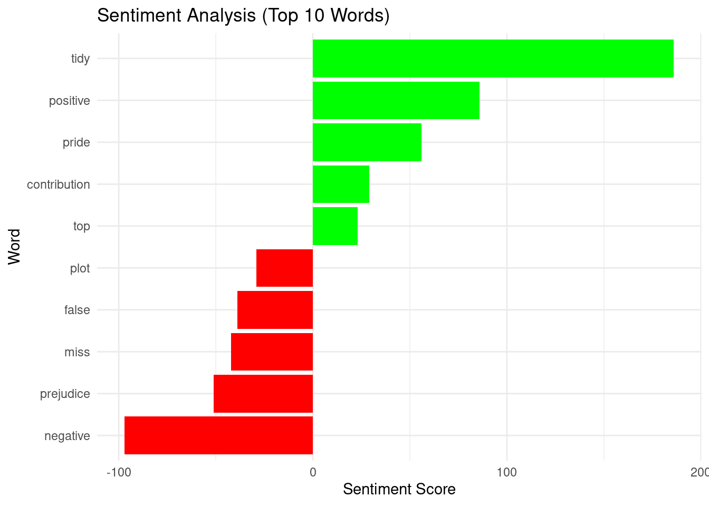
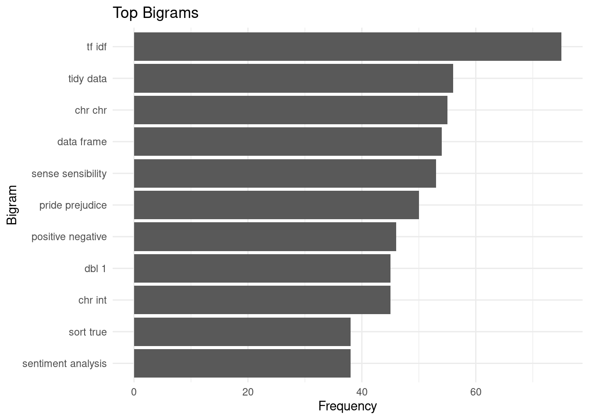

In this task, we will analyze text data. First, we will count how many times each word appears in our dataset. Then, we will create a word cloud to show which words are used most often. We will use the Tidy Text Mining website for guidance. We will also look at pairs of words (bigrams) to see common phrases and perform sentiment analysis to find out if the text is positive, negative, or neutral.
# Load required packages for web scraping, text mining, and visualizing
library(rvest)
library(stringr)
library(tidytext)
library(tm)
library(wordcloud)
library(ggplot2)
library(tidyr)
library(dplyr)base_url <- "https://www.tidytextmining.com"webpage <- read_html(base_url)
toc_links <- webpage %>%
html_nodes("nav a") %>%
html_attr("href")
toc_links <- toc_links[grepl("^/", toc_links)]
page_urls <- paste0(base_url, toc_links)all_page_content <- list()
for (full_url in page_urls) {
cat("Scraping content from:", full_url, "\n")
webpage <- read_html(full_url)
content_section <- html_nodes(webpage, css = "#content")
content_text <- html_text(content_section)
cleaned_content <- str_replace_all(content_text, "<script.*?</script>|<style.*?</style>", "")
final_content <- str_squish(cleaned_content)
all_page_content[[full_url]] <- final_content
}## Scraping content from: https://www.tidytextmining.com/
## Scraping content from: https://www.tidytextmining.com/preface
## Scraping content from: https://www.tidytextmining.com/tidytext
## Scraping content from: https://www.tidytextmining.com/sentiment
## Scraping content from: https://www.tidytextmining.com/tfidf
## Scraping content from: https://www.tidytextmining.com/ngrams
## Scraping content from: https://www.tidytextmining.com/dtm
## Scraping content from: https://www.tidytextmining.com/topicmodeling
## Scraping content from: https://www.tidytextmining.com/twitter
## Scraping content from: https://www.tidytextmining.com/nasa
## Scraping content from: https://www.tidytextmining.com/usenet
## Scraping content from: https://www.tidytextmining.com/referencesall_content_df <- data.frame(page_url = names(all_page_content), content = unlist(all_page_content))
total_word_count <- sum(nchar(all_content_df$content) - nchar(gsub("\\s+", "", all_content_df$content)))
cat("Total word count:", total_word_count, "\n")## Total word count: 39010corpus <- Corpus(VectorSource(all_content_df$content))
corpus <- tm_map(corpus, content_transformer(tolower))
corpus <- tm_map(corpus, removePunctuation)
corpus <- tm_map(corpus, removeNumbers)
corpus <- tm_map(corpus, removeWords, stopwords("en"))
tdm <- TermDocumentMatrix(corpus)
m <- as.matrix(tdm)
word_freq <- sort(rowSums(m), decreasing = TRUE)
valid_words <- grep("^[a-zA-Z]+$", names(word_freq), value = TRUE)wordcloud(words = valid_words, freq = word_freq[valid_words], min.freq = 10,
random.order = FALSE, colors = brewer.pal(8, "Dark2"))
top_n <- 10
top_words <- head(valid_words, n = top_n)
word_counts <- word_freq[top_words]
bar_data <- data.frame(word = top_words, frequency = word_counts)
bar_data <- bar_data[order(-bar_data$frequency), ]
ggplot(bar_data, aes(x = reorder(word, frequency), y = frequency)) +
geom_bar(stat = "identity") +
labs(title = paste("Top", top_n, "Words by Frequency"),
x = "Word", y = "Frequency") +
theme_minimal() +
coord_flip()
corpus_tokens <- all_content_df %>%
mutate(content = tolower(content)) %>%
unnest_tokens(word, content) %>%
anti_join(stop_words)
sentiment_scores <- corpus_tokens %>%
inner_join(get_sentiments("bing"), by = "word") %>%
count(word, sentiment) %>%
spread(sentiment, n, fill = 0) %>%
mutate(sentiment_score = positive - negative)
top_sentiment_words <- sentiment_scores %>%
top_n(10, abs(sentiment_score)) %>%
mutate(word = reorder(word, sentiment_score))
ggplot(top_sentiment_words, aes(x = word, y = sentiment_score, fill = sentiment_score > 0)) +
geom_bar(stat = "identity", show.legend = FALSE) +
scale_fill_manual(values = c("red", "green"), guide = FALSE) +
labs(title = "Sentiment Analysis (Top 10 Words)",
x = "Word", y = "Sentiment Score") +
theme_minimal() +
coord_flip()
bigrams <- corpus_tokens %>%
filter(!is.na(lead(word))) %>%
mutate(bigram = paste(word, lead(word), sep = " ")) %>%
count(bigram, sort = TRUE)
top_bigrams <- bigrams %>%
filter(n > 10) %>%
slice_max(order_by = n, n = 10)
ggplot(top_bigrams, aes(x = reorder(bigram, n), y = n)) +
geom_col() +
labs(title = "Top Bigrams",
x = "Bigram", y = "Frequency") +
theme_minimal() +
coord_flip()